AI Academy · Level 4 · Grade 9 · Week 15 · Student lesson
Confusion Matrix
Learn to understand, design, build, test and explain AI systems responsibly.
Project: Responsible Plant Classifier
Before you start
AI-2 Week 13: define positive before naming errors.
Plan time to read, investigate and explain. Keep predictions separate from observations.
Student lesson · 1 of 14
Your mission
Your learning target
I can build a labelled confusion matrix from matched reference and prediction pairs.
I can distinguish false positives from false negatives using a declared positive class.
I can check matrix totals and explain why equal accuracy can hide different errors.
Remember before reading
Close your notes first. A rough first answer helps us choose the right starting point; it is not a score for your ability.
Without opening the old lesson, explain one key idea from Scores and Calibration Intuition. Give an example and a mistake that the idea helps you avoid.
Without opening the old lesson, explain one key idea from Nearest Neighbors. Give an example and a mistake that the idea helps you avoid.
Without opening the old lesson, explain one key idea from Dataset Cards. Give an example and a mistake that the idea helps you avoid.
After trying, check the relevant lesson or ask your teacher. Change the part of your explanation that the evidence shows was wrong.
A confusion matrix separates true positives, false positives, false negatives, and true negatives so error types remain visible.
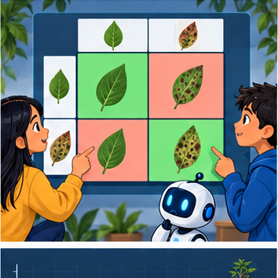
Builder name and experiment date:
Readiness for the connected explanation
Why should a reproducible run save predictions linked to example IDs rather than only an accuracy score?
This week’s end goal
By the end, I can explain confusion matrix using a traced example and a stated limitation.
Student lesson · 2 of 14
Notice the evidence
PICTURE ENTRY
Notice → Predict → Explain
Begin with visible evidence; do not explain more than the picture and information support.
Name three visible details without interpreting them.
Predict the data, model, or evaluation decision being made.
Identify one hidden assumption that could change the result.
State what evidence would confirm or reject your prediction.
My prediction and supporting evidence:
A closer explanation
A confusion matrix shows which labels a classifier mixes up. It counts examples after predictions are made; it does not fit or repair the classifier. Week 12 had reference/prediction pairs clear/clear, blocked/blocked, clear/blocked. A labelled table can preserve the type of that error as well as the total score.
This week uses eight new fictional evaluation records from a frozen classifier. They are not extra predictions from the Week 12 code. Each ID appears once with a reviewed reference and one prediction. The grouped table below lists every ID. Keep reference and prediction paired by ID before counting.
| Evaluation IDs | Reference | Prediction |
|---|---|---|
| V1 V2 | clear | clear |
| V3 | clear | blocked |
| V4 V5 | blocked | clear |
| V6 V7 V8 | blocked | blocked |
Use reference labels for rows and predicted labels for columns. On both axes the order is clear, then blocked. Declare blocked as the positive class and clear as negative. Positive means the condition of interest, not good or safe. A missed blocked case and a false alarm are different errors.
Student lesson · 3 of 14
See how it works
ML MECHANISM
Input → Model → Evidence
Trace the information, fitted behavior, and evaluation proof separately.
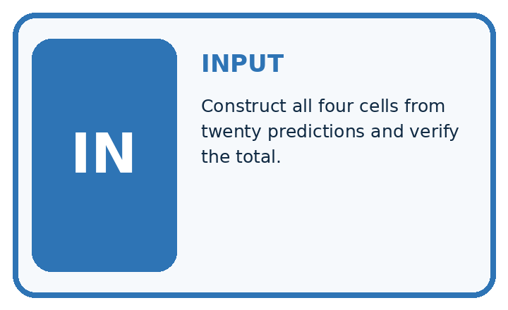
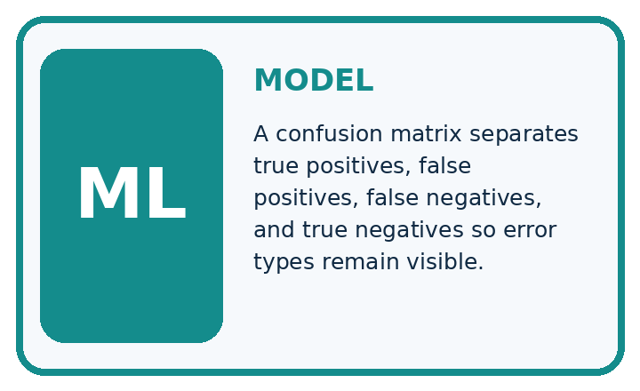
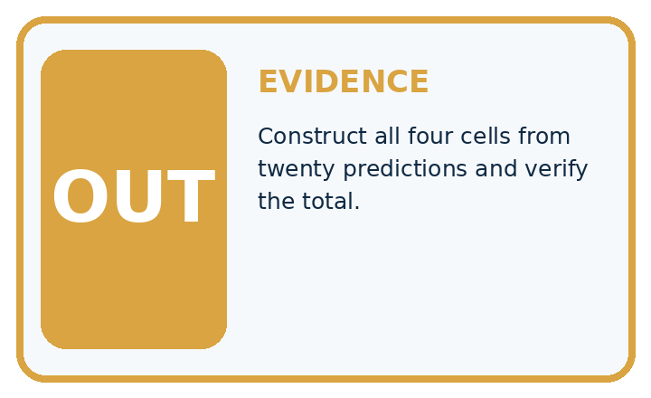
QUESTION Construct all four cells from twenty predictions and verify the total.
MODEL IDEA A confusion matrix separates true positives, false positives, false negatives, and true negatives so error types remain visible.
PROOF NEEDED Use an unseen case, visible calculation, error analysis, and a stated limitation.
Draw a fresh data → model → prediction → evaluation trace:
A closer explanation
pairs = [("V1", "clear", "clear"),
("V2", "clear", "clear"),
("V3", "clear", "blocked"),
("V4", "blocked", "clear"),
("V5", "blocked", "clear"),
("V6", "blocked", "blocked"),
("V7", "blocked", "blocked"),
("V8", "blocked", "blocked")]
labels = ["clear", "blocked"]
index = {label: i for i, label in enumerate(labels)}
counts = [[0, 0], [0, 0]]
for item_id, reference, prediction in pairs:
counts[index[reference]][index[prediction]] += 1
print(counts)
correct = counts[0][0] + counts[1][1]
print(correct, len(pairs))index maps clear to 0 and blocked to 1. Each paired record adds one to its reference row and prediction column. The script prints [[2, 1], [2, 3]] then 5 8. It assumes unique IDs and only these two labels. Check IDs and missing or unresolved references before counting; the code does not validate all those conditions.
| Reference rows | Predicted clear | Predicted blocked |
|---|---|---|
| Reference clear | 2 | 1 |
| Reference blocked | 2 | 3 |
The diagonal cells count correct predictions: 2+3=5. Off-diagonal cells count mistakes: 1+2=3. Every record must contribute exactly once. This is a count matrix, not percentages or probabilities. Keep the axis labels even when copying the numbers.
Connect the picture and the explanation
Point to the input, the deciding step and the result in this week’s visual. Explain the same step in ordinary words. A picture helps when you can say what each part represents.
Student lesson · 4 of 14
Compare the cases
EVALUATION DESIGN
Four Tests, Four Kinds of Evidence
A system is not understood until it survives more than one comfortable example.


NORMAL Expected data and expected behavior.
BOUNDARY Value close to a threshold, ambiguous label, or uncertain prediction.
MISSING Necessary field, label, source, or measurement is unavailable.
SHIFTED New lighting, species, device, subgroup, or time condition.
Which case most threatens today's claim, and why?
Change one thing in the pictured case
Change: A review corrects one missed spotted leaf, moving it from FN to TP.
Prediction: Counts become TP 5, FN 0, FP 3, TN 12; accuracy is 17/20=85%.
Reason: One decision becomes correct while the total number of evaluated leaves remains20.
Student lesson · 5 of 14
Words that unlock the idea
VOCABULARY
Words You Can Calculate and Defend
A definition matters when it lets you interpret a new dataset, model, or result.
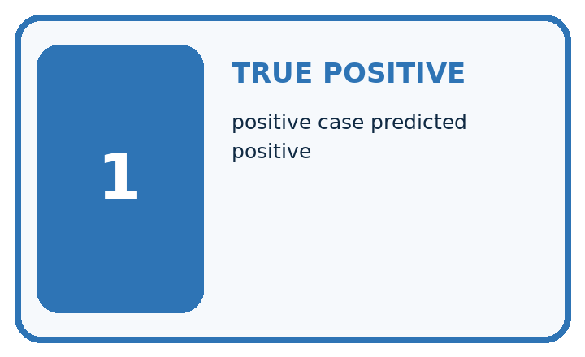
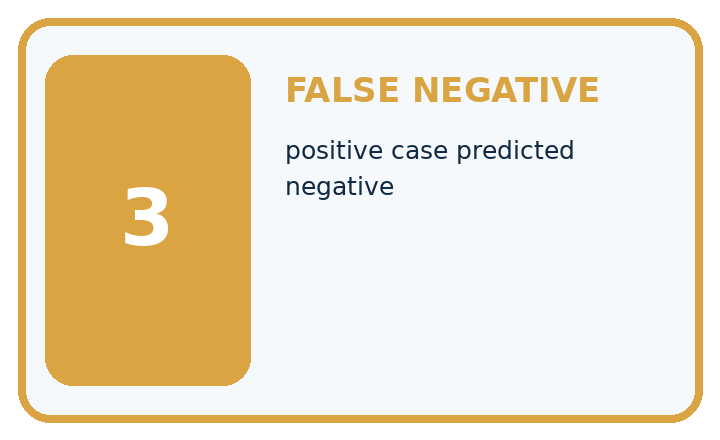
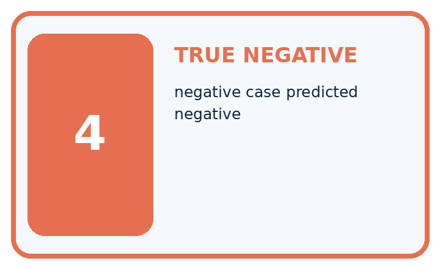
| Term | Precise meaning | My ML example |
|---|---|---|
| true positive | positive case predicted positive | |
| false positive | negative case predicted positive | |
| false negative | positive case predicted negative | |
| true negative | negative case predicted negative |
Repair the claim using a definition, calculation, or test record:
Words used in the closer explanation
| Word | Meaning |
|---|---|
| Confusion matrix | A table counting reference and prediction combinations |
| Positive class | The class chosen as the condition of interest |
| False positive | A positive prediction when the reference is negative |
| False negative | A negative prediction when the reference is positive |
Student lesson · 6 of 14
Follow a worked example
WORKED EVIDENCE
Reason Step by Step
Predict first. Then check each step. A correct answer without visible evidence cannot be audited.
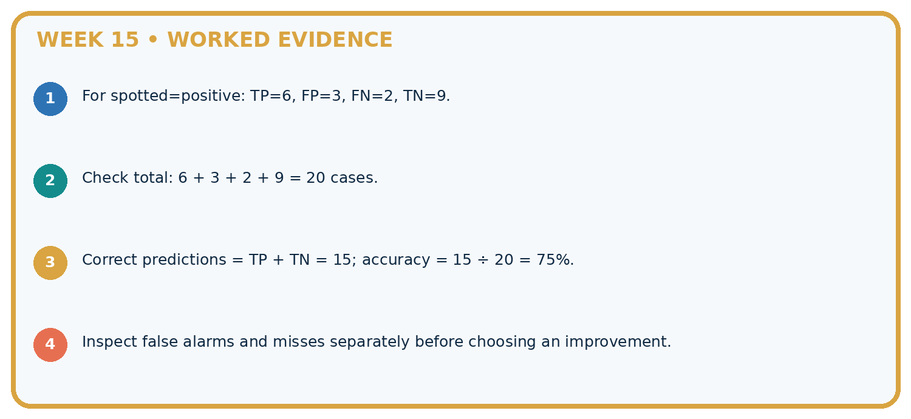
STEP 1 For spotted=positive: TP=6, FP=3, FN=2, TN=9.
STEP 2 Check total: 6 + 3 + 2 + 9 = 20 cases.
STEP 3 Correct predictions = TP + TN = 15; accuracy = 15 ÷ 20 = 75%.
STEP 4 Inspect false alarms and misses separately before choosing an improvement.
Recalculate, retrace, or restate the evidence independently:
A closer explanation
Blocked is the positive class
True means prediction agrees with the reference. It does not prove that the reference annotation is infallible. Resolve disputed labels with the documented review policy rather than silently changing them to match predictions.
Learn from the worked case
Cover the result before checking it. Say what is given, choose the procedure, and follow one step at a time. Then uncover the result and explain your first mismatch. Ask why a step is allowed, not only what number it produces.
A pictorial worked case: Confusion Matrix
Read the confusion matrix as four distinct stories about a plant decision.
The facts we will use
Positive means spotted. Toy results: TP=4, FN=1, FP=3, TN=12. Rows are actual spotted/healthy; columns predicted spotted/healthy.
All inputs and outcomes in this worked example are invented classroom data; no real model run is claimed.
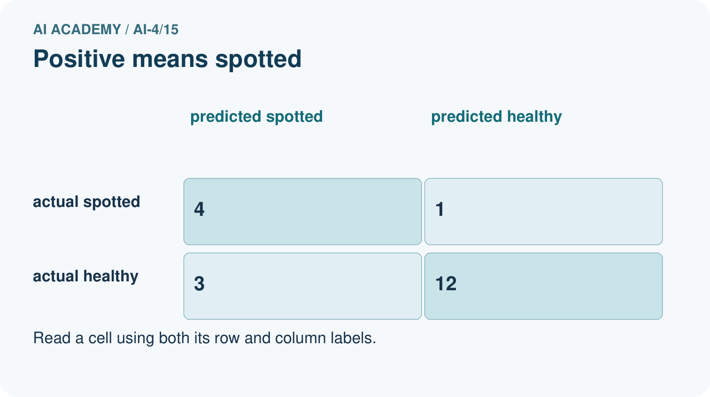
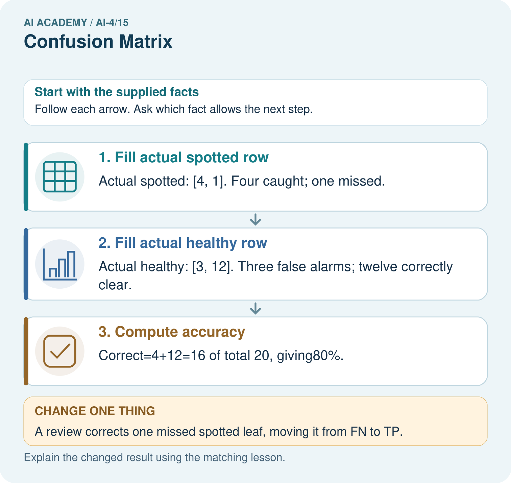
Read the picture one step at a time
Why this result follows
Read the picture in order. Correct=4+12=16 of total 20, giving80%. The arrows show which recorded input or intermediate result each decision uses. Explain the deciding step aloud before checking the changed case; pointing to the final answer alone does not show how it follows.
What this example does not establish
The matrix depends on positive-class definition and reference labels. Accuracy alone hides the difference between misses and false alarms.
Student lesson · 7 of 14
Find and repair a mistake
ERROR DETECTIVE
Compare → Diagnose → Repair
Do not patch the answer. Find the earliest unsupported assumption, data problem, or experiment error.
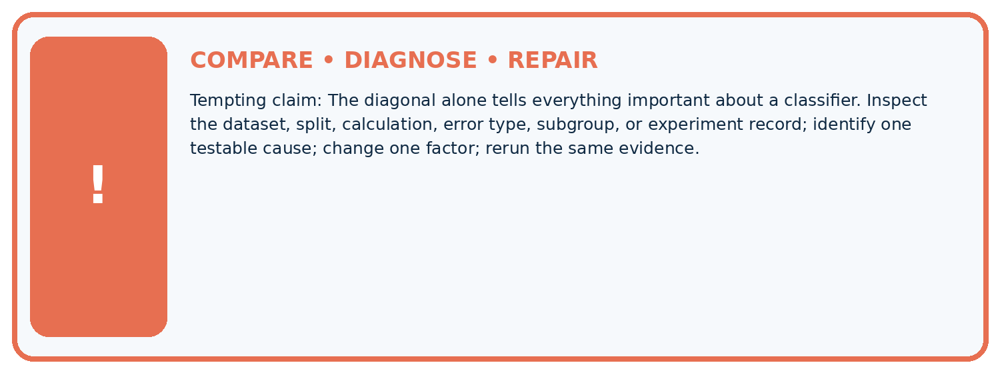
| Evidence record | Expected | Actual | Likely cause / next test |
|---|---|---|---|
| normal case | passes | ||
| boundary case | defined behavior | ||
| missing case | safe fallback | ||
| shifted case | measured limit |
Diagnose one cause and name the cleanest next experiment:
A closer explanation
Always report the evaluated split, number of records, reference and prediction axes, label order and positive class. Reversing the axis order changes positions, not the underlying outcomes. Transposing rows and columns swaps the two kinds of error unless the labels are corrected. Read the headers before interpreting a diagram from another source.
A zero cell means no such event in this evaluated set, not that it is impossible. A confusion matrix does not show the cause of errors, label quality or performance on future data. Keep the ID-level records for investigation. Next week examines accuracy when class counts are unequal.
Student lesson · 8 of 14
Practise together
ML STUDIO
Specify Before You Run
A trustworthy result can be reproduced from the recorded data, code, settings, and evaluation rule.

Experiment record
QUESTION + intended use + success threshold
DATA version + grouped split + leakage check
CODE/preprocessing + features + model + settings + seed
METRICS + positive class + units + denominators
PREDICTIONS + errors + subgroup slices + limitations
HUMAN reviewer + release, revise, limit, or stop decision
Write the minimum record needed to reproduce today's result:
A closer explanation
Row totals are 3 reference-clear and 5 reference-blocked. Column totals are 4 predicted-clear and 4 predicted-blocked. All four cells sum to 8. Accuracy is the diagonal total divided by the total: 5/8, or 62.5 percent. The Week 12 three-record matrix was [[1,1],[0,1]] in this same axis order, giving 2/3.
Another classifier on these same eight reference-labelled records could have matrix [[3,0],[3,2]]. It also gets 5/8 correct, but has zero false positives and three false negatives. Our worked classifier has one false positive and two false negatives. Equal accuracy does not settle which error pattern is preferable; consider the task and evidence before choosing.
Practise with less help: Explain the two error types
Use workbook W2 for the connected example “Confusion matrices”. First fill the input and rule boxes. Try the middle steps before asking for a hint. After a hint, try the next step yourself.
| Plan | Do | Check |
|---|---|---|
| What is given? Which rule or procedure applies? | Record each intermediate step. | Does the result follow? What remains unknown? |
Explain your trace to a partner. Your partner points to one step to check. Swap roles on the next case. Each person writes their own explanation.
Check your reasoning
Use the worked case for Confusion matrices. Proposed explanation: “Positive means good”. Decide whether this explanation is supported. Point to the step or supplied fact that decides; explain your repair if needed.
Answer on your own before discussion. If you are unsure, say which step you need help with.
Explain the picture
Why is adding TP alone without reducing FN an incorrect revision? Point to the relevant step in the picture, then write the changed result and the rule or evidence that supports it.
This is supported practice. Keep the separately named independent case for an attempt before feedback.
Student lesson · 9 of 14
Run the investigation
EVIDENCE LAB
Predict → Run → Calculate → Interpret
Keep the test conditions fixed, record every result, and change only one planned factor.
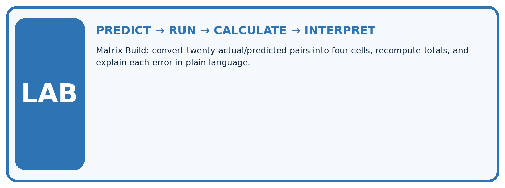
1. Write the hypothesis and expected evidence before running.
2. Matrix Build: convert twenty actual/predicted pairs into four cells, recompute totals, and explain each error in plain language.
3. Run one normal, one boundary, one missing, and one shifted case.
4. Calculate the metric from raw counts or row-level errors.
5. Interpret what changed, what did not, and what remains unsafe or unknown.
| Case | Prediction | Actual | Calculation / evidence | Meaning / next test |
|---|---|---|---|---|
| Normal | ||||
| Boundary | ||||
| Missing | ||||
| Shifted |
Plan → try → check
Before trying: what do I expect, and why? While trying: which step could first go wrong? Afterwards: what did I actually observe, and what should change? Keep “not run” if you only traced the procedure.
Student lesson · 10 of 14
Build your understanding
MASTERY
From Knowing the Word to Owning the Idea
Move upward only when you can produce evidence without copying the example.

DEFINE Use all four terms precisely: true positive, false positive, false negative, true negative.
CALCULATE Reproduce the worked evidence with units and denominator.
TRACE Explain the data, code or decision path.
DIAGNOSE The diagonal alone tells everything important about a classifier.
TRANSFER Solve a fresh dataset or model case.
IMPROVE Change one cause and rerun fixed evidence.
DEFEND State intended use, metric, limitation, and human responsibility.
Student lesson · 11 of 14
Connect your project
CUMULATIVE PROJECT
Responsible Plant Classifier
Every week adds one reviewable artifact to the same evidence-based capstone.
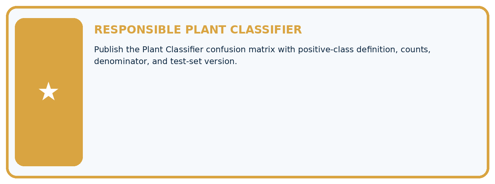
Which requirement or risk does this artifact address?
Which dataset, split, code, and metric version does it use?
What normal and shifted cases were tested?
What remains uncertain or weak?
What decision still belongs to a teacher or qualified human?
My evidence-linked project decision:
Evidence for your project
For your Responsible Plant Classifier, save the input, procedure, observed result and limitation of this check. Label this worked example as practice; use a different, previously unreviewed case when checking independent understanding.
Student lesson · 12 of 14
Show what you know
INDEPENDENT PROOF
Explain • Calculate • Transfer • Defend
Complete this with a fresh case after guided practice and compare it with the mastery criteria.
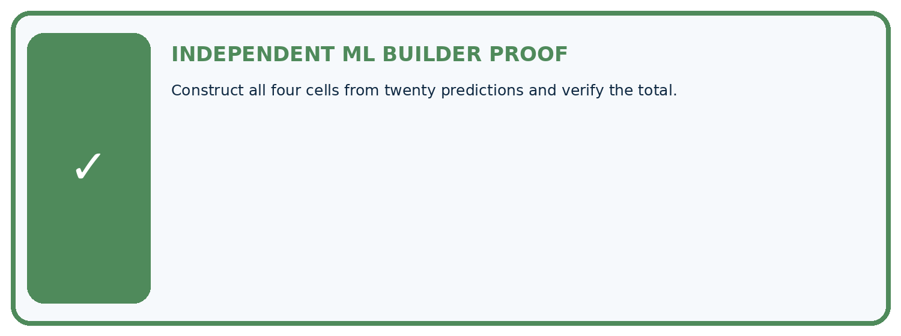
□ Define the task, feature/target roles, and intended-use boundary.
□ Show the calculation, code trace, or experiment record.
□ Test a normal case and one revealing boundary, missing, or shifted case.
□ Diagnose one failure without changing several factors at once.
□ Name a limitation, fairness concern, and the human-review action.
Independent evidence and defense:
My level: □ Not yet □ With one hint □ Independently □ I can teach and defend it
Student lesson · 13 of 14
Study a complete case
Week 15 Worked case
Use the supplied details to practise the weekly concept before attempting the independent question. This case extends the illustrated lesson.
The situation
Positive is spotted. TP=8, FP=2, FN=4, TN=6.
The question
Build actual-row/predicted-column matrix and total.
Worked explanation
Actual spotted row is 8 spotted,4 healthy; actual healthy row is 2 spotted,6 healthy. Total=20; correct=14. State axes and positive class.
Explain it in your own words
Which detail supports the answer, and why does it matter?
Trace the supplied case visually
Actual rows, predicted columns
| Evidence or stage | Value or result |
|---|---|
| True positive | 8 |
| False negative | 4 |
| False positive | 2 |
| True negative | 6 |
Positive is spotted. TP=8, FP=2, FN=4, TN=6.
Build actual-row/predicted-column matrix and total.
Actual spotted row is 8 spotted,4 healthy; actual healthy row is 2 spotted,6 healthy. Total=20; correct=14. State axes and positive class.
Student lesson · 14 of 14
Try a new case independently
Independent case: Changed independent case
On20 cases: true positives5, false negatives4, false positives2, true negatives9. Build the confusion matrix with actual class as rows and predicted class as columns. Compute accuracy.
Attempt this case before feedback. Record any help. Earlier examples below are further practice; a case already practised with feedback cannot establish fresh transfer.
Week 15 Independent application
Close the worked explanation. Apply the idea to this different question without copying.
Treat fern as positive. Counts are TP=6, FP=2, FN=3 and TN=9. How many examples and how many correct predictions are there?
My answer, with a trace, calculation or supporting evidence
Create and test
Change one relevant detail. Predict the result before testing. Include a boundary or missing-information case when it helps reveal a limit.
My changed input and expected result
Connect to your project
Publish the Plant Classifier confusion matrix with positive-class definition, counts, denominator, and test-set version.
The evidence I will keep
Your teacher has the independent answer and scoring criteria. Complete the matching workbook week to keep your practice evidence together.
Transfer practice from the original programme
Positive=spotted. TP=6,FN=2,FP=3,TN=9. Draw a matrix with actual labels in rows and predictions in columns. Compute total and accuracy.
Use feedback to improve
Attempt the independent case before hints. Record whether you worked alone, used a hint or followed a model. After feedback, fix the first unsupported step and explain why it changed. A later check uses a changed case, not a copied answer.